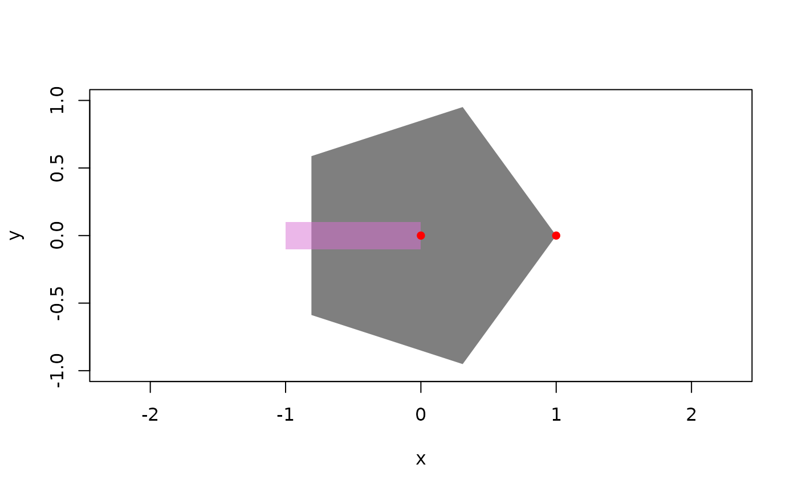
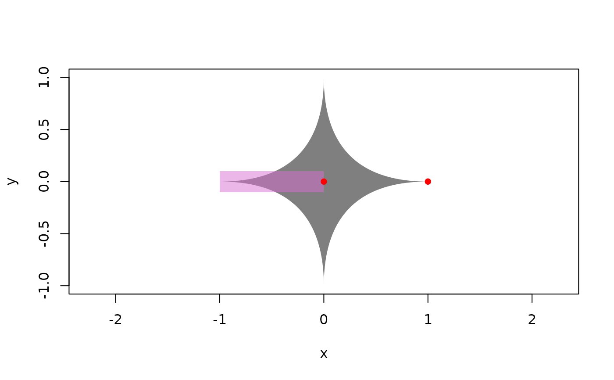

Make arrrowhead with ellipse
Arguments
- a
width of ellipse
- b
height of ellipse
- superellipse
parameter for specifying superellipses. Can be of length 1 or 2
- rotate
rotation angle in radians
- rescale
a single value or 2-length vector for scaling in x and y
- nudge
a single value or 2-length vector for nudging in x and y
- transformations
a vector of transformation functions
- n
number of points in polygon
- plot
plot arrowhead if TRUE
Examples
ellipsehead <- arrow_head_ellipse(plot = TRUE, b = .5)
ellipsehead_spaced <- arrow_head_ellipse(
plot = TRUE,
b = .5,
rescale = .45,
nudge = c(.55, 0)
)
# Make regular polygon with n - 1 sides
pentagon <- arrow_head_ellipse(n = 6, plot = TRUE)

# make a superellipses
star4 <- arrow_head_ellipse(superellipse = .5, plot = TRUE)

squircle <- arrow_head_ellipse(superellipse = 3, plot = TRUE, rotate = pi / 4)
longboat <- arrow_head_ellipse(plot = TRUE, b = 1, a = 4, superellipse = c(3,.5))